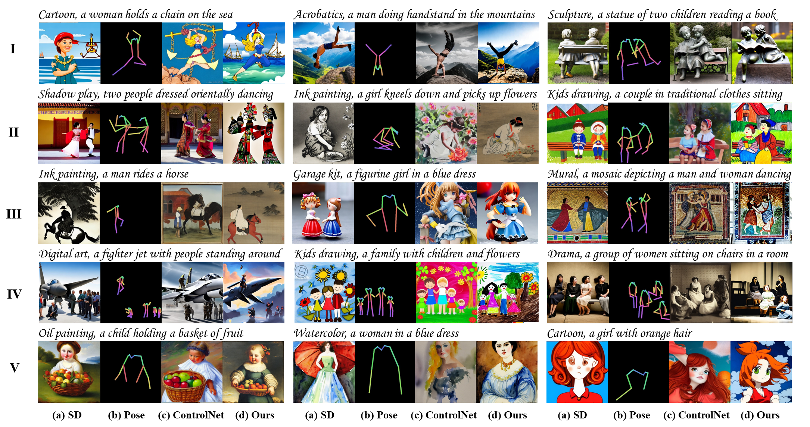
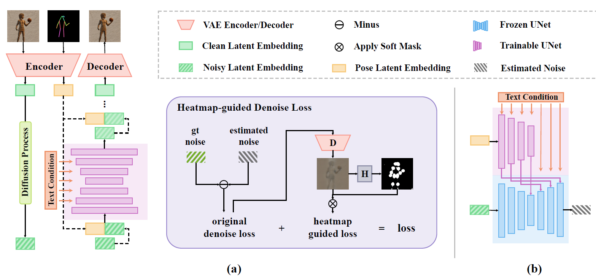

HumanSD: A Native Skeleton-Guided Diffusion Model for Human Image Generation
Xuan Ju12
Ailing Zeng1
Chenchen Zhao2
Jianan Wang1
Lei Zhang1
Qiang Xu2
1International Digital Economy Academy
2The Chinese University of Hong Kong
HumanSD highlights multi-scenario human-centric image generation with precise pose control, which reaches State-of-the-art performance in terms of pose and image quality.
[Paper]
[Code]
[Video]

Abstract
Controllable human image generation (HIG) has numerous real-life applications.
State-of-the-art solutions, such as ControlNet and T2I-Adapter, introduce an additional learnable branch on top of the frozen pre-trained stable diffusion (SD) model, which can enforce various conditions, including skeleton guidance of HIG.
While such a plug-and-play approach is appealing, the inevitable and uncertain conflicts between the original images produced from the frozen SD branch and the given condition incur significant challenges for the learnable branch, which essentially conducts image feature editing for condition enforcement.
In this work, we propose a native skeleton-guided diffusion model for controllable HIG called HumanSD. Instead of performing image editing with dual-branch diffusion, we fine-tune the original SD model using a novel heatmap-guided denoising loss. This strategy effectively and efficiently strengthens the given skeleton condition during model training while mitigating the catastrophic forgetting effects. HumanSD is fine-tuned on the assembly of three large-scale human-centric datasets with text-image-pose information, two of which are established in this work. HumanSD outperforms ControlNet
in terms of accurate pose control and image quality, particularly when the given skeleton guidance is sophisticated.
Model Overview

Overview. (a) shows the proposed framework HumanSD with a novel heatmap-guided denoising loss. (b)
shows the recent SOTA method, ControlNet, which doubles an SD UNet encoder for condition extraction and freezes
the original SD branch to maintain image generation ability.
Contact Us!
For detailed questions about this work, please contact juxuan.27@gmail.com
We are looking for talented, motivated, and creative research and engineering interns working on human-centric visual understanding and generation topics. If you are interested, please send your CV to Ailing Zeng (zengailing@idea.edu.cn).